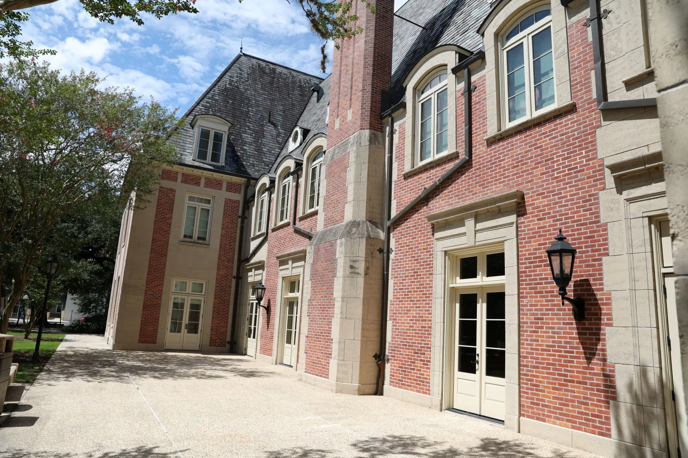
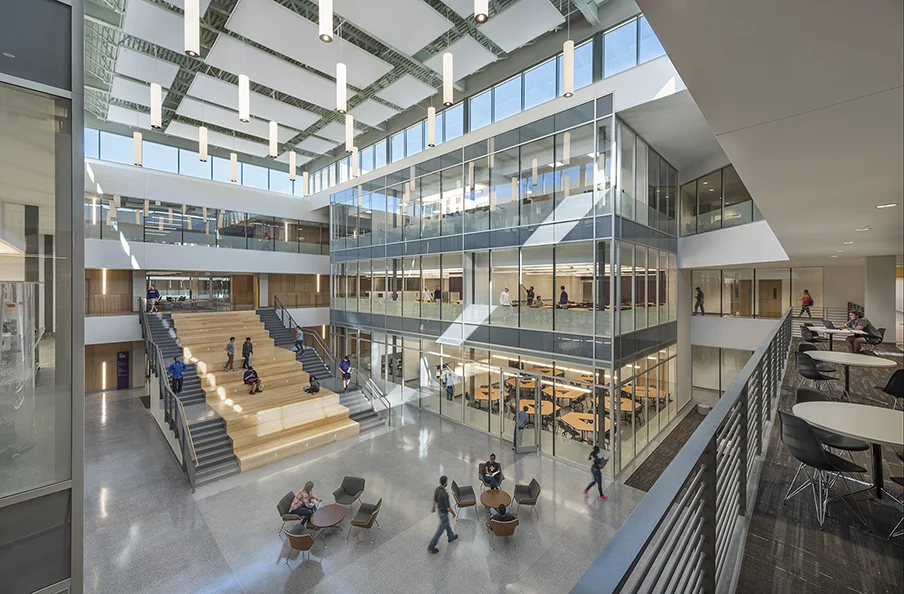

Affiliations & Experience
Academic institutions, research organizations, and industry internships.

As an Honors Scholar at Louisiana State University, I pursue an interdisciplinary curriculum emphasizing critical thinking, research methodologies, and honors seminars. I also work directly as a student worker at the historic French House, providing student support and assisting college operations.

Part of the Division of Computer Science and Engineering at LSU. My coursework covers core systems programming, algorithm analysis, object-oriented design, software engineering methodologies, database systems, and collaborative engineering projects.
IT Internship · May 2026 – August 2026
IT Internship · May 2025 – August 2025